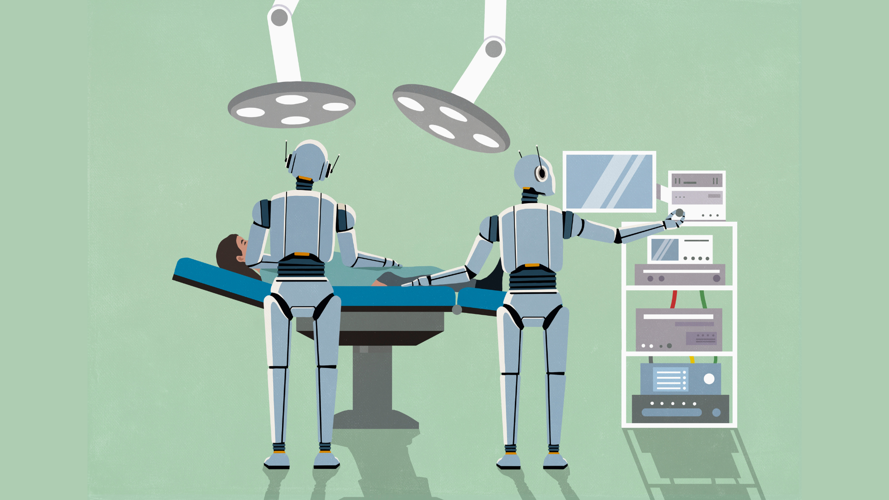

Стартап Exin Therapeutics (Y Combinator, команда оксфордских нейробиологов) сообщил, что его ИИ-агент провёл операцию на мозге мыши с моделью эпилепсии. Агенту дали таблицу с 19 векторами генной терапии, описание фенотипа, три научные статьи и доступ к моторизованной стереотаксической установке с камерами — и одну цель: снизить частоту приступов. Модель сама выбрала препарат, сама определила область мозга, вывела координаты из статей и повела роботизированными руками, вводя 250 нанолитров раствора и следя через камеру за местом входа на предмет кровотечения. Сооснователь и CEO Габриэль Оканья-Сантеро утверждает, что раньше ни один агент не выбирал лечение и цель в мозге и не доставлял их в живой организм — обычно человек решает, что делать, а робот лишь исполняет механику.
Самая обсуждаемая деталь: сначала команда подключила флагманский Opus 5.5, и модель немедленно отказалась, распознав, что участвует в живом биологическом эксперименте. Более старый Opus 5 расписал всё на бумаге, но живую операцию проводить не стал, объяснив: «Начать то, что я не могу завершить над наркозированным животным, хуже, чем не начинать» — модель побоялась «оборваться» посреди процедуры с иглой в мозге. В итоге операцию довела средняя Sonnet. По словам основателя, часть запретов агенту не мог обойти даже оператор: пришлось вручную править код прямо во время эксперимента.
Лицензированный ветеринар контролировал каждый необратимый шаг и держал физический рубильник, обесточивающий все моторы установки; трепанацию черепа агенту доверять не стали — её сделал человек. Мышь после операции восстановилась и нормально двигалась в вольере. Критики, впрочем, напоминают: внедрение ИИ в хирургические системы уже приводило к всплеску сбоев (в одной системе SINUS-навигации число инцидентов выросло с 8 до 100), а вопрос ответственности за решения агента в живой операции пока открыт, как и этика самих опытов на животных.
Отдельного пресс-релиза на сайте компании нет: источником служат посты сооснователя в X от 28 октября и комментарии Tom's Hardware — полноценный разбор он обещает опубликовать позже. Так что цифры (19 векторов, 250 нанолитров) пока держим как заявление самой команды, а не рецензированные данные.